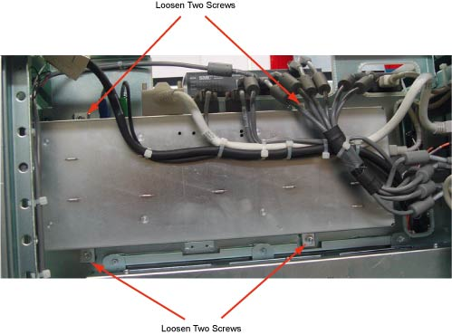
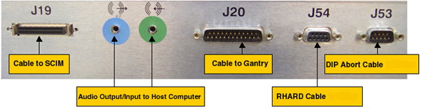

Operating Documentation
Direction 5181178-800, Rev# 16
BrightSpeed Select Service Methods Gen
Module Version 3.0, Version Date 6/20/10
Operating Documentation |
| Required Persons | Preliminary Reqs | Procedure | Finalization |
|---|---|---|---|
| 1 | Not Applicable | 1 hour | 20 mins |
This module describes the procedures used to replace the Intercom Board on True-In-One Console
After the Intercom board has been replaced and, several tests and adjustment are required:
Console and table speaker volume adjustment
Prescribed tilt function test
| Last Revised on: | 17 May 2009 |
| Item | Qty | Effectivity | Part# | Manufacturer | |
|---|---|---|---|---|---|
| 6 mm Hex Key Wrench | 1 | - | - | - | |
| Item | Qty | Effectivity | Part# | Manufacturer |
|---|---|---|---|---|
| True-In-One Intercom Board | 1 | - | - | - |
| Item | Qty | Effectivity | Part# | Manufacturer | |
|---|---|---|---|---|---|
| True-In-One Intercom Board | 1 | - | - | - | |
| ||||
| All cable connector screw-locks must be finger-tightened, only. Do NOT use any tool to tighten cable screw-locks. | ||||
Select one of the following methods to Power OFF the Operator Console:
If Applications are up, click on the [Shut Down] button and select [Shutdown].
The Operator Console monitor will display a 'Power Down' message when it is acceptable to power OFF the Operator Console.
If Applications are down, open a Unix Shell. Type: halt.
Power OFF the console at the front panel switch.
Illustration 1: Power Switch

Remove the Operator Console covers.
Refer to Replacement → Console → (Console Cover Removal and Installation Procedure).
Remove the four screws located on the front panel of Intercom Board, which secures Intercom Board to the chassis.
Illustration 2: Intercom Board Front Panel

Visually verify proper labeling of each cable and disconnect all cables on the panel. If necessary, add a label to each cable for clarity.
Cables to be removed: (Refer to Illustration 3 below for cable connections)
J19: Cable to SCIM/Keyboard
Audio output/input cable to Host Computer, connect as per the color of the cable adapter
J20: Cable to gantry
J54: Serial RHARD cable
J53: Serial DIP Abort cable
Power cord on the rear panel
Illustration 3: Cable Connection on TIO Intercom Board

Slide the replacement Intercom Board into the Console.
Re-Connect the cables as using Remove the Old Intercom Board, Step 3 above as a guide. At the rear panel of Intercom Board, verify the power switch is in the “ON” position, and connect the power cord.
Power [ON] the Operator Console.
Adjust the console and table speaker volume; refer to Intercom Adjustments
Take some scans which need to do prescribed tilt; verify the prescribed tilt function is normal.
Install the console covers back.